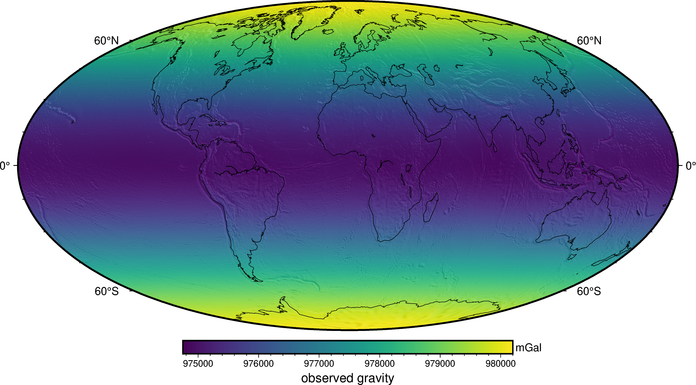
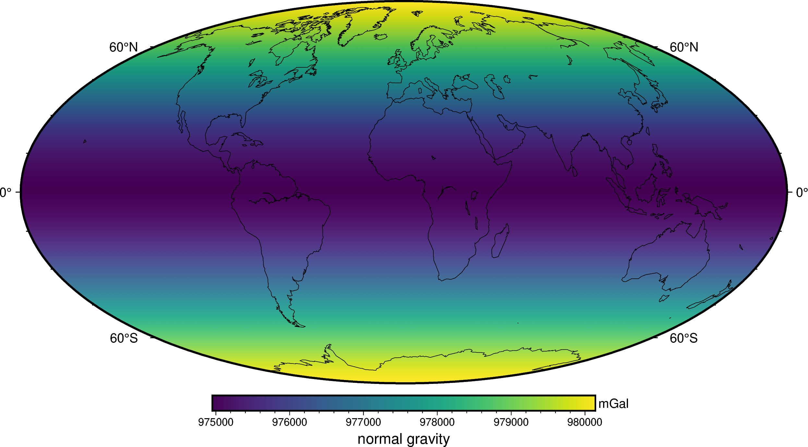
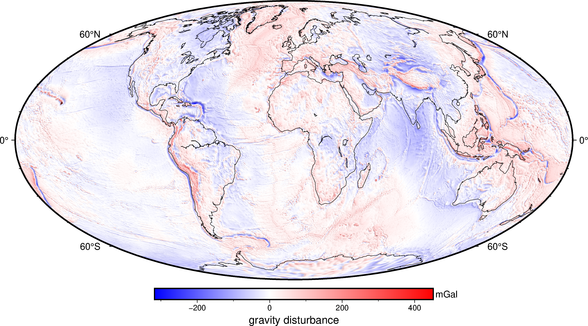

Gravity disturbances#
One of the main uses of Boule in geophysics is the calculation of gravity disturbances. Our closed-form implementation of normal gravity allows accurate gravity disturbance calculation at any height without the errors associated with approximate free-air corrections.
As an example, lets calculate a gravity disturbance grid for the Earth using a global gravity from the EIGEN-6C4 spherical harmonic model at a height of 10 km.
First off, we import the required packages to do this:
import boule as bl
import ensaio
import xarray as xr # For loading the grid data
import pygmt # For plotting nice maps
Next, we can download and cache the gravity grid using ensaio and load
it with xarray:
fname = ensaio.fetch_earth_gravity(version=1)
observed_gravity = xr.load_dataarray(fname)
observed_gravity
<xarray.DataArray 'gravity' (latitude: 1081, longitude: 2161)> Size: 19MB
array([[980106.525, 980106.525, 980106.525, ..., 980106.525, 980106.525,
980106.525],
[980108.225, 980108.225, 980108.225, ..., 980108.225, 980108.225,
980108.225],
[980108.825, 980108.825, 980108.825, ..., 980108.725, 980108.725,
980108.825],
...,
[980153.825, 980153.725, 980153.625, ..., 980153.925, 980153.825,
980153.825],
[980160.425, 980160.425, 980160.425, ..., 980160.425, 980160.425,
980160.425],
[980157.525, 980157.525, 980157.525, ..., 980157.525, 980157.525,
980157.525]], shape=(1081, 2161))
Coordinates:
* latitude (latitude) float64 9kB -90.0 -89.83 -89.67 ... 89.67 89.83 90.0
* longitude (longitude) float64 17kB -180.0 -179.8 -179.7 ... 179.8 180.0
height (latitude, longitude) float32 9MB 1e+04 1e+04 ... 1e+04 1e+04
Attributes:
Conventions: CF-1.8
title: Gravity acceleration (EIGEN-6C4) at a constant geometric...
crs: WGS84
source: Generated from the EIGEN-6C4 model by the ICGEM Calculat...
license: Creative Commons Attribution 4.0 International Licence
references: https://doi.org/10.5880/icgem.2015.1
long_name: gravity acceleration
description: magnitude of the gravity acceleration vector (gravitatio...
units: mGal
actual_range: [974748.6 980201.9]
icgem_metadata: generating_institute: gfz-potsdam\ngenerating_date: 2021...Let’s plot this data on a map using pygmt to see what it looks like:
fig = pygmt.Figure()
fig.grdimage(
observed_gravity,
projection="W20c",
cmap="viridis",
shading="+a45+nt0.2",
)
fig.basemap(frame=["af", "WEsn"])
fig.colorbar(
position="JCB+w10c",
frame=["af", 'y+l"mGal"', 'x+l"observed gravity"'],
)
fig.coast(shorelines=True, resolution="c", area_thresh=1e4)
fig.show()

Now we can calculate the WGS84 normal gravity at the same points as the
observed gravity using boule.Ellipsoid.normal_gravity:
coordinates = (
observed_gravity.longitude,
observed_gravity.latitude,
observed_gravity.height,
)
normal_gravity = bl.WGS84.normal_gravity(coordinates)
normal_gravity
<xarray.DataArray (latitude: 1081, longitude: 2161)> Size: 19MB
array([[980142.33509235, 980142.33509235, 980142.33509235, ...,
980142.33509235, 980142.33509235, 980142.33509235],
[980142.29097894, 980142.29097894, 980142.29097894, ...,
980142.29097894, 980142.29097894, 980142.29097894],
[980142.15864042, 980142.15864042, 980142.15864042, ...,
980142.15864042, 980142.15864042, 980142.15864042],
...,
[980142.15864042, 980142.15864042, 980142.15864042, ...,
980142.15864042, 980142.15864042, 980142.15864042],
[980142.29097894, 980142.29097894, 980142.29097894, ...,
980142.29097894, 980142.29097894, 980142.29097894],
[980142.33509235, 980142.33509235, 980142.33509235, ...,
980142.33509235, 980142.33509235, 980142.33509235]],
shape=(1081, 2161))
Coordinates:
* latitude (latitude) float64 9kB -90.0 -89.83 -89.67 ... 89.67 89.83 90.0
* longitude (longitude) float64 17kB -180.0 -179.8 -179.7 ... 179.8 180.0
height (latitude, longitude) float32 9MB 1e+04 1e+04 ... 1e+04 1e+04
Attributes:
long_name: latitude
standard_name: latitude
units: degrees_north
actual_range: [-90. 90.]
description: height of gravity computation points above the WGS84 elli...fig = pygmt.Figure()
fig.grdimage(
normal_gravity,
projection="W20c",
cmap="viridis",
shading="+a45+nt0.2",
)
fig.basemap(frame=["af", "WEsn"])
fig.colorbar(
position="JCB+w10c",
frame=["af", 'y+l"mGal"', 'x+l"normal gravity"'],
)
fig.coast(shorelines=True, resolution="c", area_thresh=1e4)
fig.show()

We can arrive at a grid of gravity disturbances by subtracting normal gravity from the data grid:
disturbance = observed_gravity - normal_gravity
disturbance
<xarray.DataArray (latitude: 1081, longitude: 2161)> Size: 19MB
array([[-35.81009235, -35.81009235, -35.81009235, ..., -35.81009235,
-35.81009235, -35.81009235],
[-34.06597894, -34.06597894, -34.06597894, ..., -34.06597894,
-34.06597894, -34.06597894],
[-33.33364042, -33.33364042, -33.33364042, ..., -33.43364042,
-33.43364042, -33.33364042],
...,
[ 11.66635958, 11.56635958, 11.46635958, ..., 11.76635958,
11.66635958, 11.66635958],
[ 18.13402106, 18.13402106, 18.13402106, ..., 18.13402106,
18.13402106, 18.13402106],
[ 15.18990765, 15.18990765, 15.18990765, ..., 15.18990765,
15.18990765, 15.18990765]], shape=(1081, 2161))
Coordinates:
* latitude (latitude) float64 9kB -90.0 -89.83 -89.67 ... 89.67 89.83 90.0
* longitude (longitude) float64 17kB -180.0 -179.8 -179.7 ... 179.8 180.0
height (latitude, longitude) float32 9MB 1e+04 1e+04 ... 1e+04 1e+04
Attributes:
Conventions: CF-1.8
title: Gravity acceleration (EIGEN-6C4) at a constant geometric...
crs: WGS84
source: Generated from the EIGEN-6C4 model by the ICGEM Calculat...
license: Creative Commons Attribution 4.0 International Licence
references: https://doi.org/10.5880/icgem.2015.1
icgem_metadata: generating_institute: gfz-potsdam\ngenerating_date: 2021...
standard_name: latitudeFinally, we can display the disturbance in a nice global map:
fig = pygmt.Figure()
fig.grdimage(
disturbance, projection="W20c", cmap="polar+h", shading="+a45+nt0.2",
)
fig.basemap(frame=["af", "WEsn"])
fig.colorbar(
position="JCB+w10c",
frame=["af", 'y+l"mGal"', 'x+l"gravity disturbance"'],
)
fig.coast(shorelines=True, resolution="c", area_thresh=1e4)
fig.show()

Gravity disturbances can be interpreted geophysically as the gravitational effect of anomalous masses, i.e. those that are not present in the normal (ellipsoidal) Earth. The disturbance clearly highlights all of the major subduction zones and large oceanic island chains, all of which are not in local isostatic equilibrium.
Tip
We used the WGS84 ellipsoid here but the workflow is the same for any other ellipsoid. Checkout Available ellipsoids for options.